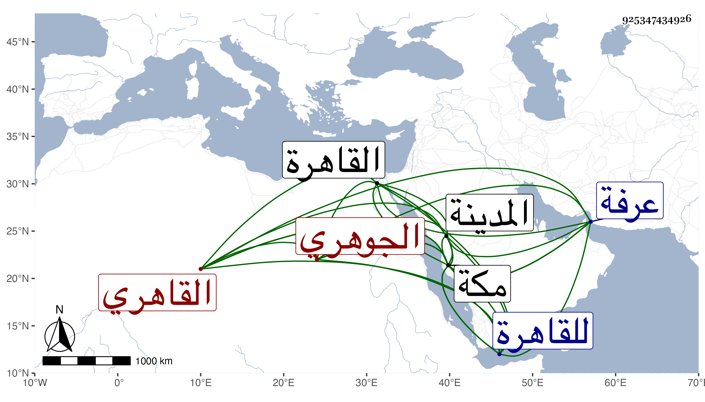

0902Sakhawi.DawLamic.ITO20230111-ara1.EIS1600.925347434926
Biography ID: 925347434926
136
أبو بكر بن علي بن التقي أبي بكر القاهري الجوهري كان نزيل مكة ويعرف بابن الفاوي . أتلف ما خلفه له أبوه وقطن مكة دهرا متعرضا للتكدية لا يفوتها من تجارها والواردين عليها كبير أحد مع اشتغال كثيرين له وقد لازمني في سنة ست وثمانين والتي بعدها بمكة في سماع أشياء كثيرة بل قرأ بنفسه أربعي النووي وكتب بخطه بعض تصانيفي بل حصل فوائد التقطها من الكتب والمجاميع وله مزيد ميل لذلك وتكرر قدومه للقاهرة ومن ذلك سنة تسعين وكذا زار المدينة وأقام بها أشهرا وسمع بها على الشمس المراغي في آخرين بهذه الأماكن وكتبت له إجازة نبهت على مهماتها في الكبير وقد سمع بالقاهرة بقراءتي على النور الأبودري والزين شعبان بن حجر والنور بن المحوجب مجلسا في فضل صوم عاشوراء للمنذري وسميت جده في الطبقة محمدا وكذا سمع في البخاري بالظاهرية واقتصرت على لقب جده . مات بمكة بعد انفصال الحج في ذي الحجة سنة إحدى وتسعين وكان ابتداء ضعفه من عرفة عفا الله عنه .
